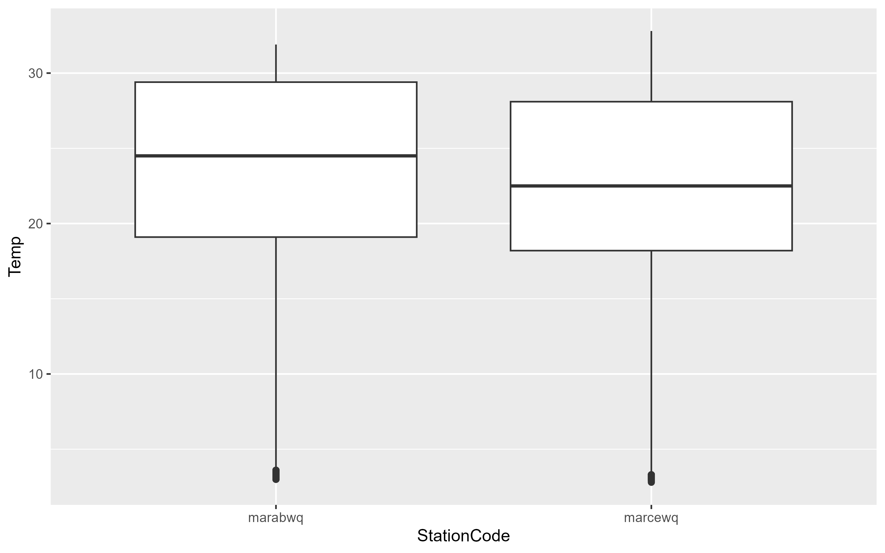
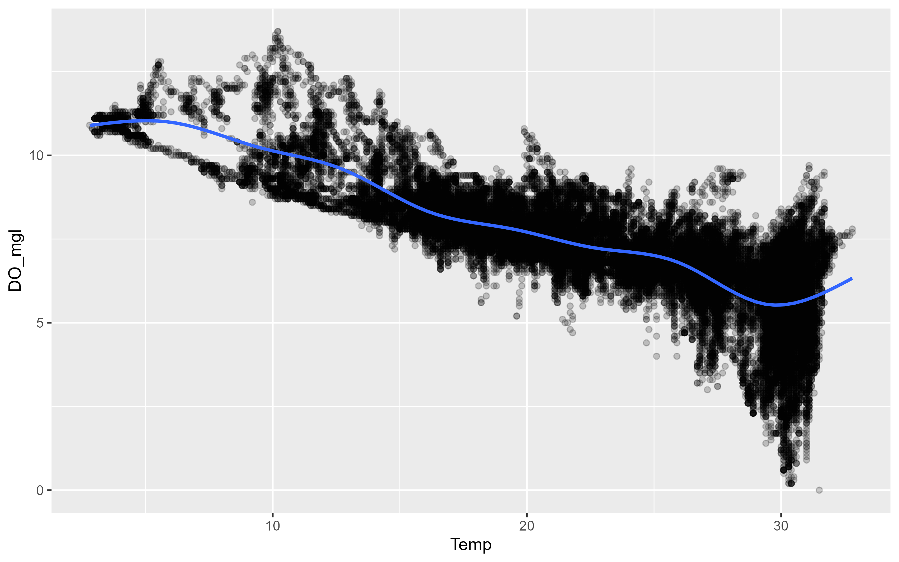
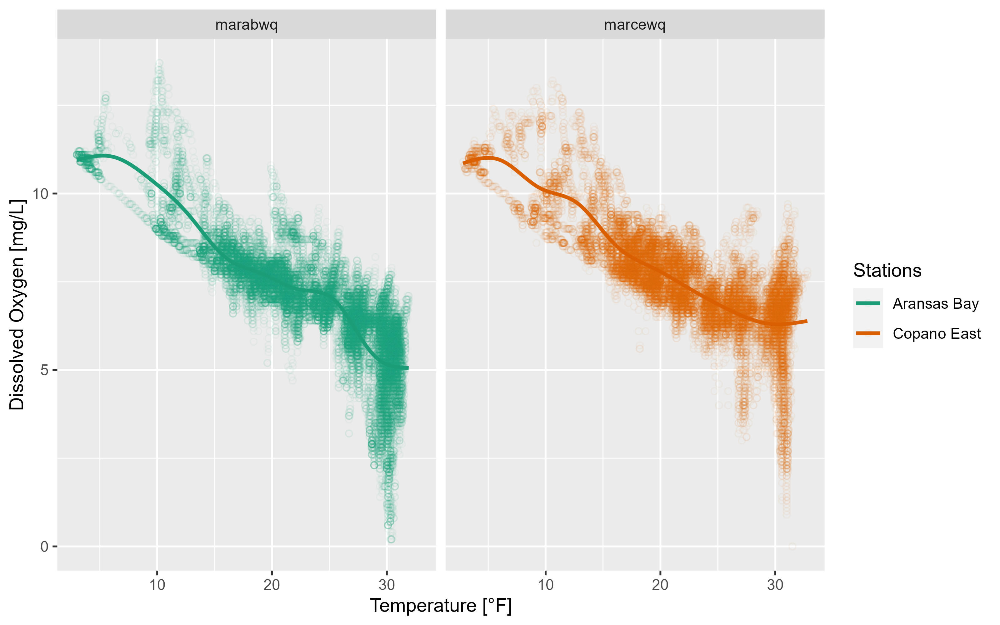
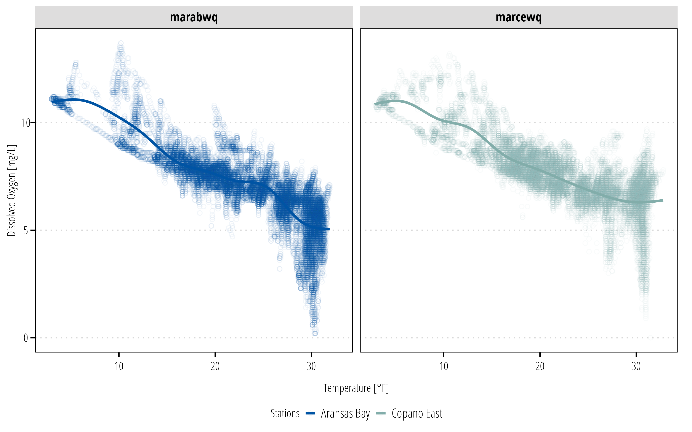

options(repos = c(
txwri = 'https://txwri.r-universe.dev',
CRAN = 'https://cloud.r-project.org'))
install.packages("tidyverse")
install.packages("twriTemplates")2 Data Exploration
This is a basic introduction to importing and tidying, plotting, summarizing, and exporting data using the tidyverse family of functions. This is a very basic primer, for more indepth discussion see: …
To get started, make sure you have the tidyverse installed. The tidyverse is actually a set of 8 packages designed to work together using a common set of design philosophies. You can doo all the things described below, without tidyverse packages, but I think it is easier to review code that is written using the tidyverse approach.
Install the required packages:
Load the packages (you will get a message indicating some function conflicts, don’t worry about that for now:
── Attaching core tidyverse packages ──────────────────────── tidyverse 2.0.0 ──
✔ dplyr 1.1.3 ✔ readr 2.1.4
✔ forcats 1.0.0 ✔ stringr 1.5.0
✔ ggplot2 3.4.3 ✔ tibble 3.2.1
✔ lubridate 1.9.3 ✔ tidyr 1.3.0
✔ purrr 1.0.2
── Conflicts ────────────────────────────────────────── tidyverse_conflicts() ──
✖ dplyr::filter() masks stats::filter()
✖ dplyr::lag() masks stats::lag()
ℹ Use the conflicted package (<http://conflicted.r-lib.org/>) to force all conflicts to become errorsSee https://github.com/TxWRI/twriTemplates for more details, use the Issues tab if you have questions.When you load tidyverse, you will see the 8 different packages.
- ggplot2 is primarily used to plot data.
- tibble is a data structure that extends the native data.frame structure in base R.
- tidyr provides tools to orient or transform data from wide to narrow formats and vice versa. It also allows nesting and unnesting of datasets.
- readr is used to read (and write) data into R from CSV, TSV and other delimited text files.
- purrr is a functional programming toolkit (don’t worry about this for now).
- dplyr provides many functions (creating new variables, grouping by variables, joining data, summarizing data, etc.) for working with tibbles and dataframes.
- stringr has functions for easily manipulating character strings.
- forcats functions for creating and reordering “factor” variables.
2.1 Import Data
One of the first steps in any data analysis project is importing or reading data into R. For now, we will focus on reading in data from comma separated value (CSV), tab seperated value (TSV), and similar delimited text files. For most projects, it is useful to work off a singular data snapshot. So once you download your data and have it in your project, do not manipulate the data file1.
1 Later on we will discuss loading web data sources directly into R, but for most of our work your best bet is to store raw data files inside the project
Example Data
The twriTemplates package includes the example data used here. The path_to_file() function returns the file path to example data csv and text files in the package. The output from path_to_file() can be used directly in the functions used to read or import csv and text files.
Use the read_csv() function from the readr package to import the data and assign it to a variable2. The console will print some information telling you what type of variable it made each column of the csv and if there are any problems.
2 Try downloading and extracting this example data to your R project data folder. Instead of using the path_to_file() function, type to path to the data folder and the filename for your first argument in read_csv(). It should look something like: read_csv("data/easterwood.csv"
## this is a shortcut function in the twriTemplates package
## that returns the file path to example data used in this documentation
example_file_path <- path_to_file("easterwood.csv")
## return a dataframe from the read_csv function with the file path
## as the first argument
df <- read_csv(file = example_file_path)Rows: 4045 Columns: 5
── Column specification ────────────────────────────────────────────────────────
Delimiter: ","
chr (1): name
dbl (3): station, dailymaximumdrybulbtemperature, dailyprecipitation
date (1): date
ℹ Use `spec()` to retrieve the full column specification for this data.
ℹ Specify the column types or set `show_col_types = FALSE` to quiet this message.read_csv() guesses the column types and sometimes it can guess wrong, so the safest option is to tell it what to expect using the col_types argument. This argument takes a string where each character represents one column. Here we will tell it to expect a character, Date, character, number, number which is represented as cDcnn.
df <- read_csv(file = example_file_path,
col_types = "cDcnn")
df# A tibble: 4,045 × 5
station date name dailymaximumdrybulbt…¹ dailyprecipitation
<chr> <date> <chr> <dbl> <dbl>
1 74746003904 2010-07-31 COLLEGE STA… 99 0
2 74746003904 2010-08-01 COLLEGE STA… 102 0
3 74746003904 2010-08-02 COLLEGE STA… 101 0
4 74746003904 2010-08-03 COLLEGE STA… 100 0
5 74746003904 2010-08-04 COLLEGE STA… 99 0
6 74746003904 2010-08-05 COLLEGE STA… 99 0
7 74746003904 2010-08-06 COLLEGE STA… 99 0
8 74746003904 2010-08-07 COLLEGE STA… 99 0
9 74746003904 2010-08-08 COLLEGE STA… 99 0
10 74746003904 2010-08-09 COLLEGE STA… 100 0
# ℹ 4,035 more rows
# ℹ abbreviated name: ¹dailymaximumdrybulbtemperatureTSV and other delimited files are read in the same way but with read_delim() or read_tsv(). If your data is in .xlsx format, the readxl pacakge is required. In readxl there is a read_xlsx() function that works similar to the read_csv() function except you can specify the sheet and range of cells to read from. The col_types argument also needs to be spelled out as a character vector such as col_types = c("text", "date", "text", "numeric", "numeric").
If you have multiple files with the same column names you can read them into the same data frame. Here we read in multiple files and are more explicit about defining the column types:
## returns two different file paths
example_file_paths <- path_to_file(c("marabwq2021.csv", "marcewq2021.csv"))
## returns one dataframe from two files
df <- read_csv(file = example_file_paths,
col_types = cols_only(
StationCode = col_factor(),
DateTimeStamp = col_datetime(format = "%m/%e/%Y %H:%M"),
Temp = col_number(),
F_Temp = col_character(),
SpCond = col_number(),
F_SpCond = col_character(),
Sal = col_number(),
F_Sal = col_character(),
DO_mgl = col_number(),
F_DO_mgl = col_character()
))
df# A tibble: 70,080 × 10
StationCode DateTimeStamp Temp F_Temp SpCond F_SpCond Sal F_Sal
<fct> <dttm> <dbl> <chr> <dbl> <chr> <dbl> <chr>
1 marabwq 2021-01-01 00:00:00 16.1 <0> 47.9 <0> 31.2 <0>
2 marabwq 2021-01-01 00:15:00 16 <0> 47.9 <0> 31.3 <0>
3 marabwq 2021-01-01 00:30:00 16 <0> 47.9 <0> 31.3 <0>
4 marabwq 2021-01-01 00:45:00 16 <0> 47.9 <0> 31.3 <0>
5 marabwq 2021-01-01 01:00:00 15.9 <0> 47.9 <0> 31.2 <0>
6 marabwq 2021-01-01 01:15:00 15.9 <0> 47.8 <0> 31.2 <0>
7 marabwq 2021-01-01 01:30:00 15.9 <0> 47.8 <0> 31.2 <0>
8 marabwq 2021-01-01 01:45:00 15.8 <0> 47.8 <0> 31.2 <0>
9 marabwq 2021-01-01 02:00:00 15.8 <0> 47.8 <0> 31.2 <0>
10 marabwq 2021-01-01 02:15:00 15.7 <0> 47.8 <0> 31.2 <0>
# ℹ 70,070 more rows
# ℹ 2 more variables: DO_mgl <dbl>, F_DO_mgl <chr>This dataset is from the NOAA NERRS Centralized Data Management Office and provides measures of water quality parameters in the Mission and Aransas (MAR) National Estuarine Research Reserve (NERR)(NOAA National Estuarine Research Reserve System (NERRS) 2022).
In this data we have a row for each date/time observation with associated columns for Station, Temperature, Specific Conductance, Salinity, and Dissolved Oxygen. The columns with the F_ prefix are qa/qc flags, <0> is accepted data.
2.2 Plot and Clean Data
ggplot2 is the graphics package for producing layered plots. The underlying philosophy of ggplot2 is to iteratively build your plots layer by layer which allows for some sophisticated plots. I won’t go into full details of using ggplot2 but lots of information is available in the ggplot2 book.
Three key things you need to learn: data, aesthetics, geoms.
data: a data frame or tibble with the data you want to plot.
aesthetics mappings (or aes): specify how variables will be visually depicted (x, y, color, shape, size, etc.).
geoms: are the layers that define how each layer is rendered (points, lines, bars, etc.).
Using the data we imported from above we can quickly create a basic scatter plot. Note the use of the + symbol to iteratively add layers to our plot. First we specify the data, then the geometry, and the aesthetic for that geom:
p1 <- ggplot(data = df, aes(x = DateTimeStamp, y = Temp)) +
geom_point()
p1Warning: Removed 4959 rows containing missing values (`geom_point()`).The above figure demonstrates the importance of plotting your data, the -100 value is clearly an issue. One thing we can do is filter the data to try and track down the issue. The dplyr package provides a number of functions to explore your data. Here, the data is filtered on the Temp column to include data less than -99:
df |>
filter(Temp < -99)# A tibble: 1 × 10
StationCode DateTimeStamp Temp F_Temp SpCond F_SpCond Sal F_Sal
<fct> <dttm> <dbl> <chr> <dbl> <chr> <dbl> <chr>
1 marcewq 2021-08-23 20:45:00 -100 <-3> [GIM] … -1211. <-3> [G… -99 <-3>…
# ℹ 2 more variables: DO_mgl <dbl>, F_DO_mgl <chr>The F_Temp qa flag is < -3 > indicating QA rejected the data point. Let’s update the data to remove data that doesn’t have the < 0 > data flag:
df <- df |>
filter(F_Temp == "<0>")
df# A tibble: 58,386 × 10
StationCode DateTimeStamp Temp F_Temp SpCond F_SpCond Sal F_Sal
<fct> <dttm> <dbl> <chr> <dbl> <chr> <dbl> <chr>
1 marabwq 2021-01-01 00:00:00 16.1 <0> 47.9 <0> 31.2 <0>
2 marabwq 2021-01-01 00:15:00 16 <0> 47.9 <0> 31.3 <0>
3 marabwq 2021-01-01 00:30:00 16 <0> 47.9 <0> 31.3 <0>
4 marabwq 2021-01-01 00:45:00 16 <0> 47.9 <0> 31.3 <0>
5 marabwq 2021-01-01 01:00:00 15.9 <0> 47.9 <0> 31.2 <0>
6 marabwq 2021-01-01 01:15:00 15.9 <0> 47.8 <0> 31.2 <0>
7 marabwq 2021-01-01 01:30:00 15.9 <0> 47.8 <0> 31.2 <0>
8 marabwq 2021-01-01 01:45:00 15.8 <0> 47.8 <0> 31.2 <0>
9 marabwq 2021-01-01 02:00:00 15.8 <0> 47.8 <0> 31.2 <0>
10 marabwq 2021-01-01 02:15:00 15.7 <0> 47.8 <0> 31.2 <0>
# ℹ 58,376 more rows
# ℹ 2 more variables: DO_mgl <dbl>, F_DO_mgl <chr>This removes about 29,263 observations. Try plotting again:
p1 <- ggplot(data = df, aes(x = DateTimeStamp, y = Temp)) +
geom_point()
p1We can use different geoms to explore the data:
p2 <- ggplot(data = df, aes(x = Temp)) +
geom_histogram(binwidth = 1)
p2ggplot(data = df, aes(y = Temp, x = StationCode)) +
geom_boxplot()

To explore relationships between two variables, use geom_point and geom_smooth with each variable mapped to x and y. In this example, ggplot2 prints a message indicating 834 rows of data had missing or NA values that could not be plotted. geom_smooth() will plot the smooth line (using a loess or gam smooth) between two variables. If you want the linear regression drawn use the argument method = "lm".
p3 <- ggplot(data = df, aes(x = Temp, y = DO_mgl)) +
geom_point(alpha = 0.2) +
geom_smooth(se = FALSE)
p3`geom_smooth()` using method = 'gam' and formula = 'y ~ s(x, bs = "cs")'Warning: Removed 834 rows containing non-finite values (`stat_smooth()`).Warning: Removed 834 rows containing missing values (`geom_point()`).

This is a good example to introduce the other important aesthetics in ggplot2. There is a clear negative relationship between Temperature and Dissolved Oxygen. Our data includes two sites, is there a difference between the two sites? We can map color to the site variable which will color each observation and each smooth a different color. Although shape and color can be used inside the aes() mapping function, you can assign them a value in the geom directly. Here we asign values for the shape and alpha properties in the point geom.
p3 <- ggplot(data = df, aes(x = Temp, y = DO_mgl, color = StationCode)) +
geom_point(shape = 21, alpha = 0.05) +
geom_smooth(se = FALSE)
p3`geom_smooth()` using method = 'gam' and formula = 'y ~ s(x, bs = "cs")'Warning: Removed 834 rows containing non-finite values (`stat_smooth()`).Warning: Removed 834 rows containing missing values (`geom_point()`).There was no reason to expect a difference and there isn’t. However the plot is muddy because there are so many overlying data points. We can also facet the graph by a variable. The following code also shows how you can just add another layer to your existing ggplot object:
p3 <- p3 +
facet_wrap(~StationCode)
p3`geom_smooth()` using method = 'gam' and formula = 'y ~ s(x, bs = "cs")'Warning: Removed 834 rows containing non-finite values (`stat_smooth()`).Warning: Removed 834 rows containing missing values (`geom_point()`).As you can see, ggplot2 allows you to rapidly iterate plots to explore data. When exploring the data, the formatting might not matter much, but if you want to export plots, we also need to take care of labels and general plot visual preferences.
p3 <- p3 +
labs(x = "Temperature [°F]", y = "Dissolved Oxygen [mg/L]") +
scale_colour_brewer(name = "Stations",
palette = "Dark2",
labels = c("Aransas Bay", "Copano East"))
p3`geom_smooth()` using method = 'gam' and formula = 'y ~ s(x, bs = "cs")'Warning: Removed 834 rows containing non-finite values (`stat_smooth()`).Warning: Removed 834 rows containing missing values (`geom_point()`).

2.2.1 Themes
ggplot2 has a number of built-in themes. For most of our use cases (reports and papers), the grey background and white lines are not great choices. We recommend using the theme_bw() function at the bare minimum:
p3 +
theme_bw()`geom_smooth()` using method = 'gam' and formula = 'y ~ s(x, bs = "cs")'Warning: Removed 834 rows containing non-finite values (`stat_smooth()`).Warning: Removed 834 rows containing missing values (`geom_point()`).The twriTemplates package is available with a custom theme and some color palettes that are consistent with the Institute’s branding:
install.packages("twriTemplates",
repos = c(txwri = 'https://txwri.r-universe.dev',
CRAN = 'https://cloud.r-project.org'))library(twriTemplates)
p3 +
theme_TWRI_print() +
scale_color_discrete_twri(name = "Stations",
labels = c("Aransas Bay", "Copano East"))Warning: Removed 834 rows containing non-finite values (`stat_smooth()`).Warning: Removed 834 rows containing missing values (`geom_point()`).

The facet labels are still not very useful. There isn’t an easy way to change this using ggplot2. Instead we can create a new variable using the mutate() function in dplyr. There is more discussion about dplyr in the next section.
df <- df |>
mutate(StationName = case_when(
StationCode == "marabwq" ~ "Aransas Bay",
StationCode == "marcewq" ~ "Copano Bay East"
))
ggplot(data = df,
aes(x = Temp, y = DO_mgl, color = StationName)) +
geom_point(shape = 21, alpha = 0.05) +
geom_smooth(se = FALSE) +
facet_wrap(~StationName) +
labs(x = "Temperature [°F]", y = "Dissolved Oxygen [mg/L]") +
scale_color_discrete_twri(name = "Stations") +
theme_TWRI_print()Warning: Removed 834 rows containing non-finite values (`stat_smooth()`).Warning: Removed 834 rows containing missing values (`geom_point()`).2.3 Manipulate and Summarize Data
dplyr is a powerful package designed for working with dataframes and tibbles. Read the dplyr introduction to get a better sense of all the available functions. Essentially dplyr provides “verb” functions that correspond to how you want to manipulate the dataframe.
Commonly used verbs include:
-
filter(): subset the rows based on value -
mutate(): create a new column -
select(): subset columns based on names or types -
group_by(): group the data by variable values -
summarise(): summarise the grouped or ungrouped data based on user provided functions
There are many other functions, but these cover many use cases for people just getting started. dplyr also provides functions for joining datasets based on common variables, changing the order of a dataframe, calculating cumulative statistics, calculating lag and leading values, and rolling or window rank functions among others. All of these can be very useful to become familiar with.
In this example I want to explore seasonal differences in the water quality parameters. mutate() is used to create new variables.
summary_plot <- df |>
# returns DateTimeStamp Value as the month only
# see ?strptime() for more info
mutate(Month = as_factor(format(DateTimeStamp, "%B")),
StationName = case_when(
StationCode == "marabwq" ~ "Aransas Bay",
StationCode == "marcewq" ~ "Copano Bay East")) |>
## months have an inherent order, right now it is alphabetical
## this adds the correct order so it plots nicely
mutate(Month = lvls_revalue(Month, month.name)) |>
ggplot() +
geom_boxplot(aes(x = Month, y = DO_mgl, fill = StationName)) +
scale_fill_discrete_twri(name = "Stations") +
theme_TWRI_print()
summary_plotWarning: Removed 834 rows containing non-finite values (`stat_boxplot()`).Now we have a summary figure, but what about the data? We can use the summarize() or summarise() function (depending on your English preference) to calculate some summary statistics for each group.
summary_table <- df |>
mutate(Month = as_factor(format(DateTimeStamp, "%B")),
StationName = case_when(
StationCode == "marabwq" ~ "Aransas Bay",
StationCode == "marcewq" ~ "Copano Bay East")) |>
mutate(Month = lvls_revalue(Month, month.name)) |>
## create groups to calculate summary stats on
group_by(StationName, Month) |>
## calculate the summary stats
## returns a column for each stat with a row for each group
summarize(Mean = mean(DO_mgl),
Max = max(DO_mgl),
Min = min(DO_mgl),
## no standard error function in base R
## can calculate manually here
SE = sd(DO_mgl)/sqrt(length(DO_mgl)))`summarise()` has grouped output by 'StationName'. You can override using the
`.groups` argument.summary_table# A tibble: 24 × 6
# Groups: StationName [2]
StationName Month Mean Max Min SE
<chr> <fct> <dbl> <dbl> <dbl> <dbl>
1 Aransas Bay January 8.56 12.1 6.7 0.0149
2 Aransas Bay February 9.36 13.7 6.4 0.0314
3 Aransas Bay March 7.57 8.7 5.6 0.00920
4 Aransas Bay April 7.19 8.2 5.9 0.00952
5 Aransas Bay May 7.10 9 5.7 0.0143
6 Aransas Bay June 5.86 7.8 2.2 0.0190
7 Aransas Bay July 4.74 8.2 0.2 0.0308
8 Aransas Bay August 5.08 7.1 0.2 0.0185
9 Aransas Bay September 5.69 7.8 2.3 0.0162
10 Aransas Bay October 6.67 9.6 3.2 0.0167
# ℹ 14 more rows2.4 Export Data
2.4.1 Figures
You have created a figure and a table in R. Now you probably need to put it in a report, website, or other self contained file for your boss to look at. For figures created with ggplot2, the ggsave() option is the easiest option. First I recommend installing, the ragg package because if it available, ggsave() will use it. ragg provides higher performance and higher quality images than the graphics devices available in base R.
# install ragg
install.packages("ragg")
library(ragg)
## ggsave defaults to the last plot displayed
## it is safer to specify which plot you want saved
ggsave(filename = "figures/boxplot_mare.png",
plot = summary_plot,
width = 8,
height = 6,
dpi = 300,
units = "in")If you have a figure created from something other than a ggplot object, then we need to use the ragg graphics device to save it as a file (this also works with ggplot as demonstrated here). If you don’t have ragg installed, substitute png() for agg_png().
2.4.2 Tables
readr and writexl packages provide the functions required to export data frames to text delimited or Microsoft Excel files.
## write a csv
write_csv(x = summary_table,
file = "export_data/monthly_summary_mare.csv")
## or an Excel file
## uncomment the next line if writexl is not installed
# install.packages("writexl")
library(writexl)
# one sheet
write_xlsx(x = summary_table,
path = "export_data/monthly_summary_mare.xlsx")
# or specify sheets
write_xlsx(x = list(summarysheet = summary_table,
rawdatasheet = df),
path = "export_data/monthly_summary_mare.xlsx")2.5 Workflow
Incomplete
Plan to add information on proper workflow. One script to download, clean, and save data that analysis is conducted on.
One script to run the analysis and export data/tables/figures
Metadata, readme, etc.